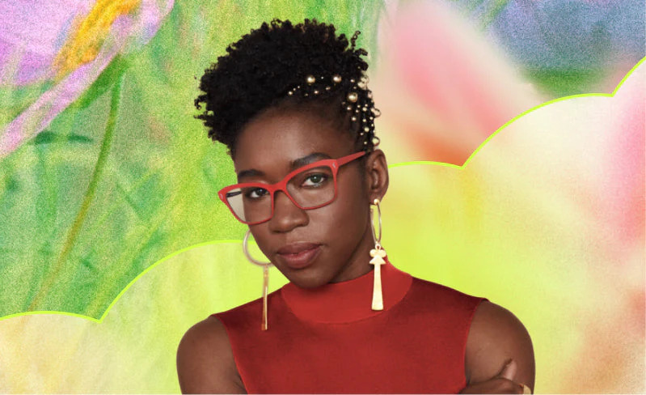

In the making of this project, we started with one question: what is something that is both accessible for the two of us and something that has distinct groupings that will allow for us to have the best results in our teachable machine? The answer we found for this question was kitchen utensils since they have prominent categories and were readily available for both of us. After this topic creation we went to sample collection, taking a variety of different photos of our kitchen tools in different poses, positions, and backgrounds to try and get the best results for our machine.
In this data collection stage some questions that came up were "What constitutes a knife?" Is it just a butter knife, or should we also add steak knives, bread knives, etc.? Is this enough data? And how will the seemingly simple choices we're making now affect the project overall? A portion of these questions do not have easy answers, and without proper analysis on why the decisions we made are the right ones, each one of these quick calls is now baked into the fiber of the learning model.
Once the images were taken, and I had the unfortunate displeasure of converting all 120 of my iPhone's HEIC files to a compatible JPG file, they were uploaded into their buckets in Teachable Machine and were ready to start being trained on. After an initial training run we realized that TMs have more settings to get better results: epochs, batch size, and learning rate. Following the instructions under each item, we kept batch size and learning rate at default and increased the epoch to a lofty 1000 runthroughs to try and maximize the accuracy of our model. Overall this process was a bit time-consuming with the data collection, but it created a model that somewhat accurately predicted the category of each item presented to it after its creation.
After trialing this model many times over the past couple of days, its output has performed in an interesting way, which is that the model is very good at distinguishing between items with unique properties. These unique propertied items like forks and tongs were very confidently classified by the model. Ladles were classified quite well in isolation but struggled when spoons were added.
Where the problems lie within this model are within the boundaries; both spoons and ladles are very similar to each other in our everyday life, having similar shapes and use cases, which is why when it comes to the machine trying to distinguish between the two, it has a very hard time. However, while this seems like a problem with the machine, it is more likely that it is a problem with our input data, where we should have taken in data that better separates the two from each other.
Lastly, one of the most interesting things from this experiment was the tongs, which were the biggest wildcard within our teachable machine. This example is at the core of many data training models like ours. Where there is a misunderstanding that when an image is uploaded into a training model, the machine receives no wider context. It does not know that tongs are a gripping tool that opens and closes or that a closed pair of tongs and an open pair of tongs are the same object. The challenge of representing the full range of what an object looks like falls entirely on us as the people collecting the data, and if we don't think to photograph tongs in both positions, the model won't ever know that closed tongs exist.

One of the most resonant lessons from Unmasking AI while completing this assignment is the idea that artificial intelligence systems are only as good as the data used to train them. Throughout our project, this concept became very clear as we saw how our model’s strengths and weaknesses directly reflected the choices we made during data collection. The book emphasizes that bias, gaps, and limitations in datasets are not just technical issues - they are human decisions that shape how AI behaves. This directly connects to our experience when defining categories like “knife” or distinguishing between similar objects like spoons and ladles.
Another important takeaway is the lack of true understanding in AI systems. As discussed in Unmasking AI, machine learning models do not “know” what objects are in a human sense - they simply recognize patterns. This became especially evident with our tongs example. The model did not understand that tongs can open and close; it only recognized the specific visual patterns we showed it. If certain variations were missing from our dataset, the model failed to identify them. This reinforced the idea that AI does not have context or common sense, and that responsibility falls entirely on the creators to provide comprehensive and representative data.
The book also highlights how easily people can overestimate the intelligence and reliability of AI systems. At the start of this project, it was tempting to assume that increasing training settings like epochs would automatically lead to highly accurate results. However, we learned that more training cannot fix poor or incomplete data. This aligns with the book’s warning that technical improvements alone cannot solve deeper issues rooted in data quality and design decisions.
Finally, Unmasking AI stresses the importance of critical thinking when working with AI technologies. Rather than viewing the model’s mistakes as simple errors, we began to see them as reflections of our own assumptions and limitations during the project. For example, the confusion between spoons and ladles was not just a failure of the machine, but a sign that our categories were not clearly defined or visually distinct enough.
Overall, this assignment reinforced the central message of Unmasking AI: AI systems are not neutral or inherently intelligent. They are shaped by human choices at every stage, from data collection to model training. Recognizing this helped us better understand both the potential and the limitations of our Teachable Machine model.